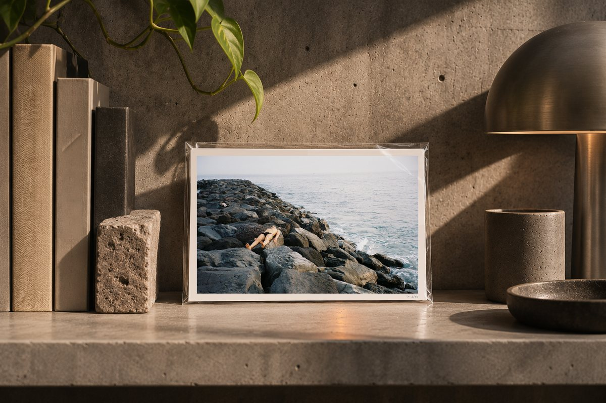
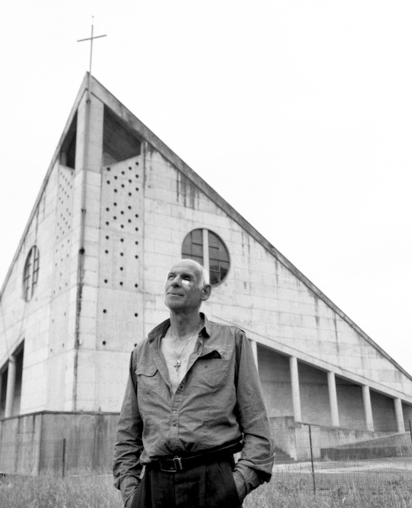
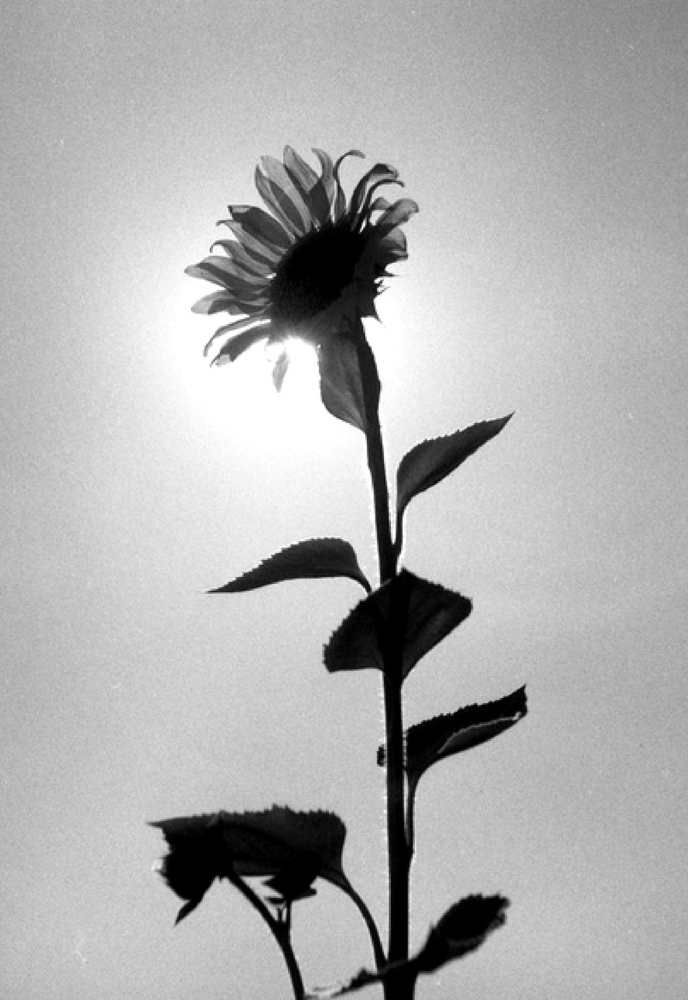
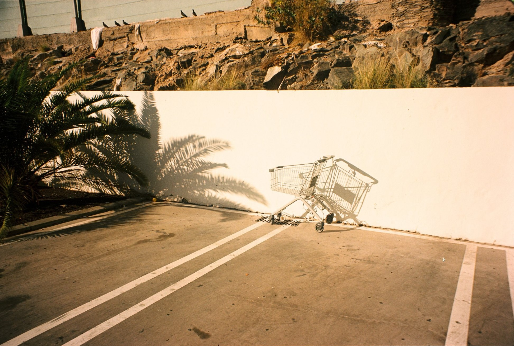

Iyán Rojo
Fotografía
Films
Encargos
Contacto
ES
/ EN
Fotografía
Copias

Copias fine art →
Firmadas · Ediciones de 15
Proyectos

2 Amigos
2026 · Formato medio

Tierra de Nadie
2026 · Formato medio 6×6

Calima
2022 · Gran Canaria · 35 mm
Selección
+ Fotos
← Volver al inicio
Cerrar
Compartir
¿Quieres esta fotografía?